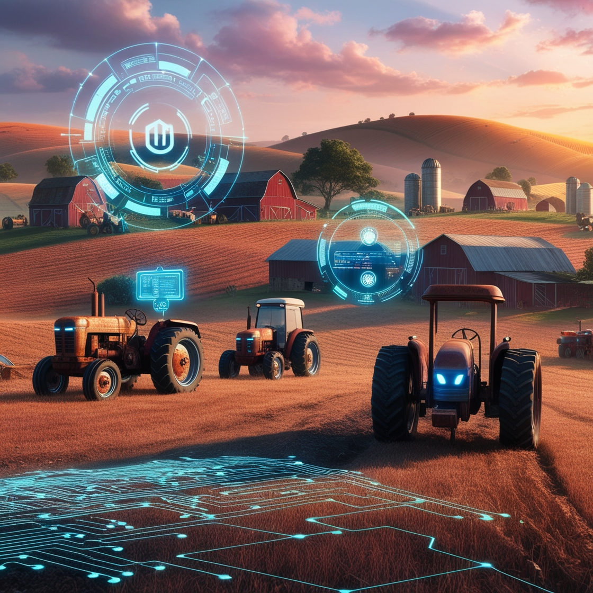

Bem-Vindo
À era da inovação agrícola, onde novas tecnologias e práticas estão moldando o futuro da agricultura. Da biotecnologia à agricultura de precisão, a inovação impulsiona avanços que promovem a sustentabilidade e garantem a segurança alimentar. Além de avanços técnicos, a inovação representa uma mentalidade de pensar fora da caixa e abraçar a mudança. Ao adotarmos plenamente a inovação agrícola, podemos transformar desafios em oportunidades e nutrir um futuro mais próspero para a agricultura e o planeta.
SE QUISER SABER MAIS SOBRE NÓS CLIQUE NA IMAGEM ACIMA
SOBRE INOVAÇÃO AGRÍCOLA
O que é inovação agrícola:
Inovação agrícola refere-se ao desenvolvimento e aplicação de novas tecnologias, práticas e métodos na agricultura, visando melhorar a eficiência, produtividade, sustentabilidade e resiliência do setor agrícola. Isso pode envolver diversas áreas, como biotecnologia, automação, manejo integrado de culturas e recursos hídricos, uso de drones e sensores para monitoramento, entre outros. O objetivo é utilizar novos conhecimentos e técnicas para enfrentar desafios como mudanças climáticas, escassez de recursos naturais e demandas crescentes por alimentos, buscando um desenvolvimento agrícola mais sustentável e eficiente.

Importância da inovação agrícola:
A inovação agrícola é fundamental para aumentar a produtividade, melhorar a eficiência no uso de recursos, desenvolver culturas mais resistentes a doenças e mudanças climáticas, melhorar a qualidade dos alimentos, reduzir o desperdício alimentar, impulsionar o desenvolvimento econômico rural e promover a sustentabilidade a longo prazo na produção de alimentos.
Tecnologia e Práticas Inovadoras